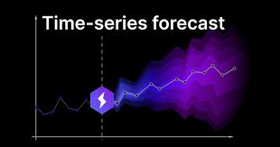

This project delivers a production-grade forecasting model that predicts daily billable hours with over 95% accuracy. Built to support workforce and financial planning in a service-driven organization, the model streamlines resource allocation by transforming historical performance data into actionable insights.
🔍 Key Highlights
- Modeled billable hours using engineered time-series features such as lags, rolling averages, and holidays
- Integrated historical data cleaning and preprocessing directly into the pipeline
- Utilized ensemble learning methods for high-accuracy regression predictions
- Generated visual outputs to compare forecast vs. actuals, aiding performance tracking
🛠 Tech Stack
- Python | Pandas | NumPy | Matplotlib | Seaborn | Scikit-learn | XGBoost | Jupyter Notebook
🌱 Impact
- Empowered project managers with predictive tools to anticipate workload and adjust staffing
- Reduced forecasting errors significantly, improving planning and stakeholder confidence

This project automates the cleanup and structuring of product listing data to prepare it for annotation workflows and client delivery. It minimizes manual effort by detecting and removing unusable rows, cleaning inconsistent formats, and generating audit reports, improving both efficiency and transparency in high-volume data environments.
🔍 Key Highlights
- Automatically filters out explicit content, duplicates, and unreadable WPIDs
- Organizes removed entries into separate audit files with clear reasons for exclusion
- Reorganizes the dataset by product type keywords to simplify annotation tasks
- Cleans and formats URLs to ensure accessibility and consistency
🛠 Tech Stack
- Python | Pandas | NumPy | Jupyter Notebook
🌱 Impact
- Saved hours of manual QA work by automating repetitive validation checks
- Improved downstream data usability and annotation team productivity
- Enabled transparent client reporting by logging all excluded data with reasons
This project automates the tracking and alerting process for missing productivity targets across teams. Built using Google Apps Script and connected to BigQuery, the script intelligently monitors platform hours and assigned targets, then sends timely email reminders to the right stakeholders (Associates, Team Leads, and Project Managers).
🔍 Key Highlights
- Smart Notification Logic: Emails are triggered based on data-driven conditions, ensuring that no one is spammed unnecessarily and the right people are nudged at the right time.
- BigQuery-Powered: Queries are dynamically generated to summarize gaps in target setting across workflows and reporting lines.
- Automated Scheduling: Runs every Monday, Wednesday, and Friday with varying date ranges (weekly, midweek, and end-week summaries).
- HTML Report Emails: Summary tables are sent as styled HTML emails for clarity and professionalism.
🛠 Tech Stack
- Google Apps Script (JavaScript-based) | Google BigQuery (SQL) | Gmail API | HTML Email Templates
🌱 Impact
- Deployed in a real-time annotation environment to reduce delays in administrative workflows.
- Helped improve team accountability by sending smart reminders to responsible parties.
- Reduced manual follow-ups and data gaps in productivity tracking.
This project, based on my undergraduate research, applies logistic regression to assess and model the risk factors associated with stroke. Using hospital data (represented here with synthetic data), the goal was to build a predictive model to identify high-risk patients and inform preventive strategies.
🔍 Key Highlights
- Real-world medical case study from Moi Teaching & Referral Hospital, Eldoret
- Built and validated a multiple logistic regression model for stroke risk classification
- Conducted significance testing and feature selection to isolate key predictors
- Originally presented at the 13th JKUAT Scientific, Technological and Industrialization Conference
🛠 Tech Stack
- Python | Pandas | Seaborn | Matplotlib | Scikit-learn | Jupyter Notebook
🌱 Impact
- Helped uncover the strongest predictors of stroke, empowering future public health interventions